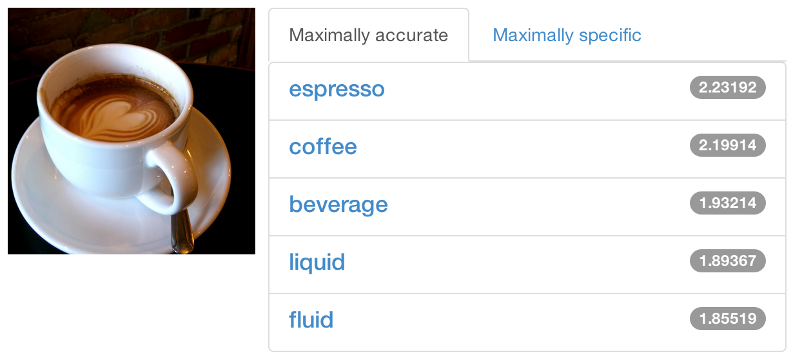
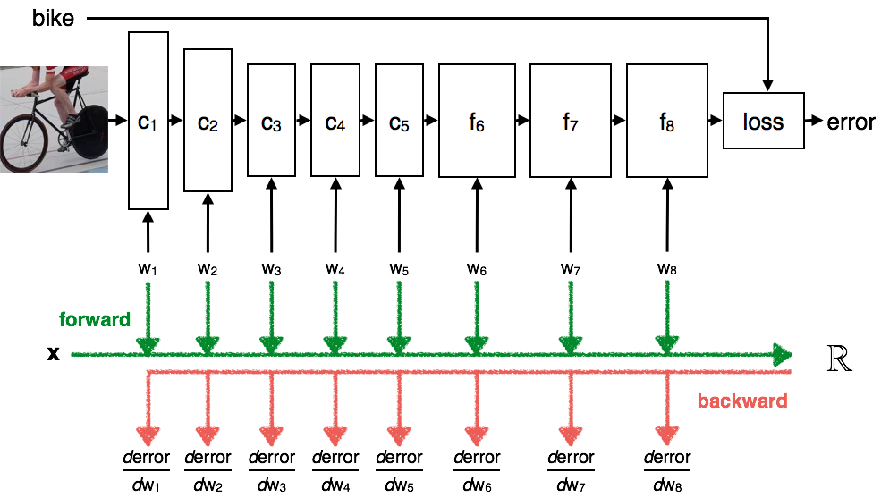

总结目前流行的CNN 架构，包括Caffe,Matcovernet以及Torch.
Caffe
Caffe is a deep learning framework made with expression, speed, and modularity in mind. It is developed by the Berkeley Vision and Learning Center (BVLC) and by community contributors. Yangqing Jia created the project during his PhD at UC Berkeley. Caffe is released under the BSD 2-Clause license.

Why Caffe?
Expressive architecture encourages application and innovation. Models and optimization are defined by configuration without hard-coding. Switch between CPU and GPU by setting a single flag to train on a GPU machine then deploy to commodity clusters or mobile devices.
Extensible code fosters active development. In Caffe’s first year, it has been forked by over 1,000 developers and had many significant changes contributed back. Thanks to these contributors the framework tracks the state-of-the-art in both code and models.
Speed makes Caffe perfect for research experiments and industry deployment. Caffe can process over 60M images per day with a single NVIDIA K40 GPU*. That’s 1 ms/image for inference and 4 ms/image for learning. We believe that Caffe is the fastest convnet implementation available.
Community: Caffe already powers academic research projects, startup prototypes, and even large-scale industrial applications in vision, speech, and multimedia. Join our community of brewers on the caffe-users group and Github.
Matconvernet
MatConvNet is a MATLAB toolbox implementing Convolutional Neural Networks (CNNs) for computer vision applications. It is simple, efficient, and can run and learn state-of-the-art CNNs. Several example CNNs are included to classify and encode images.

MatConvNet was born in the Oxford Visual Geometry Group as both an educatinonal and research platform for fast prototyping in Convolutional Neural Nets. Its main features are:
Flexibility. Neural network layers are implemented in a straightforward manner, often directly in MATLAB code, so that they are easy to modify, extend, or integrate with new ones. Other toolboxes hide the neural network layers behind a wall of compiled code; here the granularity is much finer.
Power. The implementation can run large models such as Krizhevsky et al., including the DeCAF and Caffe variants. Several pre-trained models are provided.
Efficiency. The implementation is quite efficient, supporting both CPU and GPU computation.
This library may be merged in the future with VLFeat library. It uses a very similar style, so if you are familiar with VLFeat, you should be right at home here.
cpu
1 | $ make ARCH=glnxa64 MATLABROOT=/usr/local/MATLAB/R2014a |
gpu
1 | $ make ARCH=glnxa64 MATLABROOT=/usr/local/MATLAB/R2014a ENABLE_GPU=yes CUDAROOT=/usr/local/cuda-7.0 CUDAMETHOD=nvcc |
gpu+cudnn
1 | $ sudo cp *.h /usr/local/include/ |
Torch
Torch is a scientific computing framework with wide support for machine learning algorithms. It is easy to use and efficient, thanks to an easy and fast scripting language, LuaJIT, and an underlying C/CUDA implementation.

Why Torch?
The goal of Torch is to have maximum flexibility and speed in building your scientific algorithms while making the process extremely simple. Torch comes with a large ecosystem of community-driven packages in machine learning, computer vision, signal processing, parallel processing, image, video, audio and networking among others, and builds on top of the Lua community.
At the heart of Torch are the popular neural network and optimization libraries which are simple to use, while having maximum flexibility in implementing complex neural network topologies. You can build arbitrary graphs of neural networks, and parallelize them over CPUs and GPUs in an efficient manner.